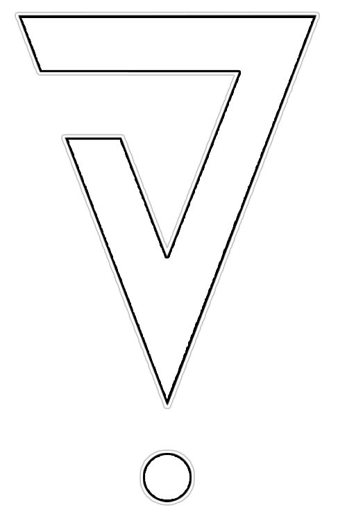

// DISPONÍVEL PARA PROJETOS

Johnnick F. Landim.
Fundador & CEO · Desenvolvedor Full Stack
Fundador e CEO da TrackPath — plataforma de marketing de afiliados construída do zero. Código, produto e visão de negócio em um só lugar.
// redes & contato
7 links
© 2026 Johnnick.
 Rastreado por TrackPath
Rastreado por TrackPath